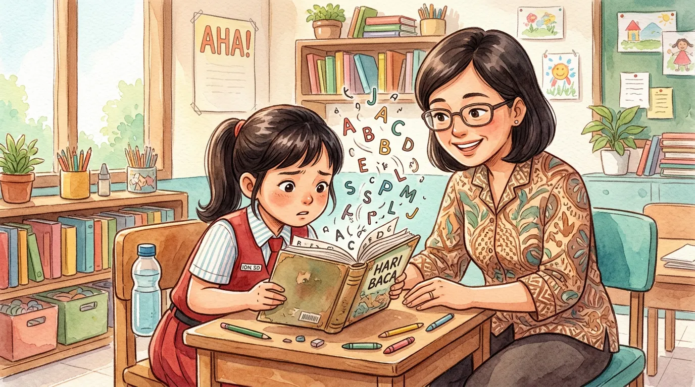

Disleksia adalah gangguan belajar spesifik yang memengaruhi kemampuan seseorang dalam membaca, mengeja, dan memproses bahasa tertulis. Kondisi ini cukup umum terjadi, diperkirakan sekitar 5-10% populasi di seluruh dunia mengalami disleksia dalam berbagai tingkat keparahan. Di Indonesia sendiri, banyak anak disleksia yang belum terdiagnosis karena kurangnya pemahaman masyarakat tentang kondisi ini.
Di Yayasan Ukhuwah Kaffah Amanatullah (YUKA), kami mendampingi anak-anak dengan berbagai kebutuhan khusus, termasuk anak-anak yang mengalami kesulitan belajar seperti disleksia. Dari pengalaman kami di Sekolah Inklusi Taruna Imani, Sleman, Yogyakarta, kami memahami bahwa anak disleksia bukanlah anak yang bodoh atau malas. Mereka adalah anak-anak cerdas yang membutuhkan pendekatan belajar berbeda agar potensi mereka dapat berkembang secara optimal.
Artikel ini kami susun untuk membantu orang tua, guru, dan masyarakat luas memahami apa itu disleksia, bagaimana mengenali ciri-cirinya, serta langkah-langkah konkret yang bisa dilakukan untuk mendukung anak disleksia dalam proses belajar mereka.
Daftar Isi
Pengertian Disleksia Menurut Para Ahli
Disleksia adalah gangguan belajar berbasis neurologis yang secara spesifik memengaruhi kemampuan membaca, mengeja, dan menulis. Istilah "disleksia" berasal dari bahasa Yunani, yaitu dys yang berarti kesulitan dan lexis yang berarti kata atau bahasa. Secara harfiah, disleksia berarti "kesulitan dengan kata-kata."
Menurut International Dyslexia Association (IDA), disleksia adalah gangguan belajar spesifik yang bersifat neurobiologis. Gangguan ini ditandai dengan kesulitan dalam mengenali kata secara akurat dan lancar, serta kemampuan mengeja dan decoding yang lemah. Kesulitan ini biasanya diakibatkan oleh defisit pada komponen fonologis bahasa yang sering kali tidak terduga mengingat kemampuan kognitif lainnya masih berfungsi normal.
Sementara itu, menurut British Dyslexia Association, disleksia adalah kondisi yang memengaruhi cara otak memproses bahasa tertulis dan lisan. Hal penting yang perlu dipahami adalah bahwa disleksia tidak berkaitan dengan tingkat kecerdasan. Anak yang mengalami disleksia bisa memiliki IQ normal, bahkan di atas rata-rata. Banyak tokoh terkenal dunia yang diketahui memiliki disleksia, seperti Albert Einstein, Leonardo da Vinci, dan Walt Disney.
Di Indonesia, pemahaman tentang disleksia masih tergolong rendah. Banyak anak disleksia yang justru dicap sebagai anak malas, bodoh, atau tidak mau belajar. Padahal, mereka mengalami kesulitan nyata dalam memproses informasi tertulis yang memerlukan penanganan khusus. Oleh karena itu, penting bagi orang tua dan pendidik untuk memahami bahwa disleksia adalah kondisi yang nyata dan membutuhkan pendekatan pembelajaran yang tepat.
Fakta Penting tentang Disleksia
Disleksia adalah gangguan belajar yang paling umum ditemukan. Sekitar 70-80% dari seluruh kasus kesulitan belajar spesifik merupakan disleksia. Kondisi ini dapat diwariskan secara genetik, sehingga jika salah satu orang tua memiliki disleksia, anak memiliki risiko 40-60% mengalami kondisi serupa.
Ciri-Ciri Disleksia pada Anak
Mengenali ciri-ciri disleksia sejak dini sangat penting agar anak bisa mendapatkan intervensi yang tepat. Gejala disleksia dapat bervariasi tergantung pada usia anak. Berikut adalah tanda-tanda yang perlu diperhatikan oleh orang tua dan guru.
Ciri-Ciri Disleksia pada Usia Prasekolah (3-6 Tahun)
- Terlambat dalam berbicara dibandingkan anak seusianya
- Kesulitan mempelajari kata-kata baru dan mengingat nama benda
- Sulit mengenali huruf alfabet dan membedakan huruf yang bentuknya mirip
- Kesulitan memahami rima dalam lagu anak-anak atau permainan kata
- Sulit mengikuti instruksi yang terdiri dari beberapa langkah
- Tidak menunjukkan ketertarikan terhadap buku atau kegiatan membaca
Ciri-Ciri Disleksia pada Usia Sekolah Dasar (7-12 Tahun)
- Membaca dengan sangat lambat dan terputus-putus
- Sering terbalik membaca huruf seperti "b" dan "d" atau "p" dan "q"
- Kesulitan mengeja kata-kata sederhana yang seharusnya sudah dikuasai
- Sulit memahami isi bacaan meskipun sudah membaca berulang kali
- Menghindari aktivitas membaca dan menulis di sekolah maupun di rumah
- Kesulitan menyalin tulisan dari papan tulis ke buku
- Tulisan tangan yang sulit dibaca dan tidak rapi
- Kesulitan mengingat urutan, seperti hari dalam seminggu atau bulan dalam setahun
Ciri-Ciri Disleksia pada Remaja dan Dewasa
- Kecepatan membaca yang jauh lebih lambat dibandingkan teman sebaya
- Kesulitan membaca dengan suara keras
- Sering salah mengeja dalam tulisan sehari-hari
- Menghindari tugas yang membutuhkan banyak membaca atau menulis
- Kesulitan meringkas atau menceritakan kembali isi bacaan
- Membutuhkan waktu lebih lama untuk menyelesaikan tugas-tugas tertulis

"Jangan pernah menganggap anak yang lambat membaca sebagai anak malas. Bisa jadi ia mengalami disleksia, sebuah kondisi yang memerlukan pemahaman dan dukungan khusus dari orang-orang di sekitarnya." - Tim Pendidik YUKA
Penyebab Disleksia
Memahami penyebab disleksia dapat membantu orang tua dan guru merespons kondisi ini dengan lebih tepat. Disleksia adalah kondisi neurobiologis yang dipengaruhi oleh beberapa faktor berikut.
1. Faktor Genetik
Penelitian menunjukkan bahwa disleksia memiliki komponen genetik yang kuat. Jika salah satu orang tua memiliki disleksia, kemungkinan anak mengalami hal serupa berkisar antara 40-60%. Beberapa gen yang berkaitan dengan perkembangan otak dan pemrosesan bahasa telah diidentifikasi sebagai faktor risiko disleksia, di antaranya gen DCDC2 dan KIAA0319.
2. Perbedaan Struktur dan Fungsi Otak
Studi pencitraan otak menunjukkan bahwa otak individu dengan disleksia memproses informasi tertulis secara berbeda. Area otak yang bertanggung jawab untuk pemrosesan fonologis, yaitu kemampuan mengenali dan memanipulasi bunyi bahasa, bekerja dengan cara yang berbeda pada individu disleksia. Perbedaan ini bukan berarti otak mereka "rusak," melainkan memiliki cara kerja yang unik.
3. Gangguan Pemrosesan Fonologis
Sebagian besar ahli sepakat bahwa inti dari disleksia adalah kesulitan dalam pemrosesan fonologis. Anak disleksia mengalami kesulitan dalam memecah kata menjadi bunyi-bunyi penyusunnya (fonem), menghubungkan bunyi dengan simbol huruf, dan memadukan bunyi-bunyi tersebut kembali menjadi kata. Proses yang bagi kebanyakan anak terjadi secara otomatis ini memerlukan usaha ekstra bagi anak disleksia.
4. Faktor Lingkungan
Meskipun disleksia adalah kondisi bawaan, faktor lingkungan dapat memengaruhi tingkat keparahannya. Kurangnya stimulasi membaca di usia dini, paparan bahasa yang terbatas, serta lingkungan belajar yang tidak mendukung dapat memperburuk gejala disleksia. Sebaliknya, intervensi dini dan lingkungan yang kaya literasi dapat membantu anak disleksia mengatasi kesulitannya dengan lebih baik.
Penting untuk digarisbawahi bahwa disleksia bukan disebabkan oleh kurangnya kecerdasan, kemalasan, atau buruknya pengasuhan. Orang tua yang memiliki anak disleksia tidak perlu merasa bersalah. Yang paling dibutuhkan anak disleksia adalah pemahaman, kesabaran, dan pendampingan yang tepat.
Jenis-Jenis Gangguan Belajar Spesifik
Disleksia adalah salah satu dari beberapa jenis gangguan belajar spesifik (Specific Learning Disorder). Memahami berbagai jenis gangguan belajar ini penting karena seorang anak bisa mengalami lebih dari satu kondisi secara bersamaan. Berikut adalah jenis-jenis gangguan belajar spesifik yang perlu diketahui.
Disleksia (Kesulitan Membaca)
Disleksia adalah gangguan belajar yang paling umum ditemukan. Seperti yang telah dibahas, kondisi ini memengaruhi kemampuan membaca, mengeja, dan memahami teks tertulis. Anak disleksia sering kesulitan mengenali kata, membaca dengan lancar, dan memahami makna bacaan.
Disgrafia (Kesulitan Menulis)
Disgrafia adalah gangguan belajar yang memengaruhi kemampuan menulis. Anak dengan disgrafia mengalami kesulitan dalam menulis tangan yang rapi dan terbaca, mengatur tulisan di atas kertas, menuangkan ide dalam bentuk tulisan, serta menggunakan ejaan dan tata bahasa yang benar. Disgrafia sering muncul bersamaan dengan disleksia karena keduanya melibatkan pemrosesan bahasa.
Diskalkulia (Kesulitan Berhitung)
Diskalkulia adalah gangguan belajar yang memengaruhi kemampuan memahami dan menggunakan angka serta konsep matematika. Anak dengan diskalkulia kesulitan memahami nilai angka, melakukan operasi hitung dasar, memahami konsep waktu dan uang, serta menyelesaikan soal matematika yang melibatkan langkah-langkah berurutan.
Gangguan Pemrosesan Auditori
Gangguan pemrosesan auditori terjadi ketika otak mengalami kesulitan memproses suara yang didengar, meskipun pendengaran anak normal. Anak dengan kondisi ini sulit membedakan bunyi yang mirip, mengikuti instruksi lisan, dan memahami percakapan di lingkungan yang bising.
Semua jenis gangguan belajar spesifik ini termasuk dalam kategori anak berkebutuhan khusus (ABK) yang memerlukan pendampingan dan metode pembelajaran yang disesuaikan. Penting bagi orang tua untuk melakukan asesmen profesional agar jenis gangguan belajar yang dialami anak dapat diidentifikasi secara akurat.

Cara Membantu Anak Disleksia Belajar
Meskipun disleksia adalah kondisi yang tidak bisa disembuhkan, dengan pendekatan yang tepat, anak disleksia dapat belajar membaca dan menulis secara efektif. Berikut adalah strategi-strategi yang terbukti membantu anak disleksia berdasarkan pengalaman kami di YUKA dan rekomendasi para ahli.
1. Pendekatan Multisensori
Metode pembelajaran multisensori, seperti pendekatan Orton-Gillingham, terbukti sangat efektif untuk anak disleksia. Pendekatan ini melibatkan lebih dari satu indera secara bersamaan dalam proses belajar. Misalnya, anak diminta mendengar bunyi huruf (auditori), melihat bentuk huruf (visual), meraba huruf timbul (taktil), dan menuliskan huruf di udara (kinestetik) secara simultan. Dengan melibatkan banyak indera, otak anak lebih mudah memproses dan mengingat informasi.
2. Program Membaca Terstruktur
Anak disleksia membutuhkan program membaca yang terstruktur, bertahap, dan konsisten. Mulailah dari unit bahasa terkecil (huruf dan bunyi), kemudian secara perlahan tingkatkan ke suku kata, kata, kalimat, dan paragraf. Setiap langkah harus dikuasai dengan baik sebelum melanjutkan ke tahap berikutnya. Pengulangan dan latihan rutin sangat penting untuk memperkuat koneksi di otak anak.
3. Pemanfaatan Teknologi Bantu
Kemajuan teknologi menyediakan berbagai alat bantu yang sangat bermanfaat bagi anak disleksia. Beberapa di antaranya adalah:
- Audiobook - membantu anak menikmati cerita dan menyerap informasi tanpa harus bergantung sepenuhnya pada membaca
- Aplikasi text-to-speech - mengubah teks tertulis menjadi suara sehingga anak bisa mendengarkan materi bacaan
- Software pengecekan ejaan - membantu anak mengoreksi kesalahan ejaan saat menulis
- Aplikasi pembelajaran membaca interaktif - menyajikan latihan membaca dalam format yang menyenangkan dan menarik
4. Menciptakan Lingkungan Belajar yang Mendukung
Lingkungan belajar memiliki pengaruh besar terhadap keberhasilan anak disleksia. Beberapa hal yang perlu diperhatikan antara lain menyediakan tempat belajar yang tenang dan bebas dari gangguan, memberikan waktu yang cukup saat anak membaca tanpa memaksa atau terburu-buru, menggunakan penanda baris (ruler atau karton) untuk membantu anak melacak baris bacaan, serta menyediakan buku dengan ukuran huruf yang lebih besar dan jarak baris yang lebih lebar.
5. Membangun Kepercayaan Diri Anak
Aspek emosional tidak kalah penting dari aspek akademik. Anak disleksia sering mengalami frustrasi, rendah diri, dan kecemasan terkait kemampuan akademiknya. Orang tua dan guru perlu secara aktif membangun kepercayaan diri anak dengan memberikan pujian atas setiap usaha dan kemajuan sekecil apa pun, fokus pada kelebihan dan bakat anak di bidang lain, tidak pernah membandingkan anak dengan saudara atau teman sebaya, serta menjelaskan bahwa disleksia bukan berarti bodoh. Banyak orang sukses yang memiliki disleksia.
6. Terapi dan Aktivitas Pendukung
Selain metode pembelajaran khusus, beberapa terapi dan aktivitas juga dapat membantu perkembangan anak disleksia. Terapi memasak misalnya, melatih anak membaca resep dan mengikuti instruksi tertulis secara menyenangkan. Wisata edukasi juga memberikan pengalaman belajar kontekstual yang membantu anak memahami konsep melalui pengalaman langsung, bukan hanya melalui teks bacaan.
Peran Sekolah dan Guru dalam Mendukung Anak Disleksia
Sekolah memiliki peran yang sangat penting dalam mendukung keberhasilan belajar anak disleksia. Dalam sistem pendidikan inklusi, sekolah dituntut untuk mengakomodasi kebutuhan belajar setiap siswa, termasuk siswa dengan disleksia dan gangguan belajar spesifik lainnya.
Identifikasi dan Asesmen Dini
Guru kelas sering menjadi orang pertama yang mengenali tanda-tanda disleksia pada siswa. Oleh karena itu, guru perlu memiliki pengetahuan dasar tentang ciri-ciri disleksia agar dapat merujuk siswa yang dicurigai mengalami kesulitan belajar untuk menjalani asesmen profesional. Deteksi dini memungkinkan intervensi yang lebih cepat dan efektif.
Modifikasi Metode Pengajaran
Guru perlu melakukan penyesuaian dalam metode pengajaran untuk mengakomodasi kebutuhan siswa disleksia. Beberapa modifikasi yang dapat dilakukan antara lain:
- Memberikan instruksi secara lisan, tidak hanya tertulis
- Menggunakan media visual seperti gambar, diagram, dan video untuk menjelaskan materi
- Memberikan waktu tambahan saat ujian dan tugas tertulis
- Mengizinkan siswa menggunakan alat bantu seperti kalkulator atau komputer
- Memberikan materi bacaan dalam format yang lebih mudah diakses
- Menilai pemahaman siswa melalui tes lisan, bukan hanya tes tertulis
Kolaborasi dengan Orang Tua
Keberhasilan pendampingan anak disleksia sangat bergantung pada kerja sama antara sekolah dan keluarga. Guru perlu berkomunikasi secara rutin dengan orang tua tentang perkembangan anak, strategi belajar yang diterapkan di sekolah, dan cara orang tua dapat mendukung belajar anak di rumah. Peran orang tua dalam pendidikan inklusi tidak bisa dipisahkan dari peran sekolah.
Guru Pendamping Khusus (GPK)
Dalam lingkungan sekolah inklusi, kehadiran Guru Pendamping Khusus (GPK) atau shadow teacher sangat membantu siswa disleksia. GPK dapat memberikan pendampingan individual, membantu siswa mengikuti pelajaran dengan metode yang disesuaikan, serta menjadi jembatan komunikasi antara siswa, guru kelas, dan orang tua. Untuk memahami lebih lanjut tentang memilih lembaga pendidikan yang tepat, baca panduan kami tentang cara memilih yayasan terbaik untuk anak berkebutuhan khusus.
Pengalaman YUKA Mendampingi Anak dengan Kesulitan Belajar
Di Yayasan Ukhuwah Kaffah Amanatullah (YUKA), kami telah mendampingi banyak anak dengan berbagai jenis kesulitan belajar melalui Sekolah Inklusi Taruna Imani di Sleman, Yogyakarta. Pendekatan kami menggabungkan metode pendidikan modern dengan nilai-nilai keislaman, menciptakan lingkungan belajar yang inklusif, hangat, dan penuh kasih sayang.
Pendekatan YUKA untuk Anak dengan Kesulitan Belajar
Di YUKA, kami percaya bahwa setiap anak memiliki cara belajar yang unik. Untuk anak-anak yang mengalami kesulitan belajar, kami menerapkan program individual yang disesuaikan dengan kebutuhan dan kemampuan masing-masing anak. Pendampingan dilakukan secara sabar dan konsisten, karena kami memahami bahwa kemajuan anak disleksia mungkin tidak selalu terlihat secara instan. Setiap langkah kecil adalah pencapaian yang layak dirayakan.
Dalam pengalaman kami, anak-anak dengan kesulitan belajar menunjukkan kemajuan yang signifikan ketika mereka berada di lingkungan yang mendukung dan memahami kebutuhan mereka. Beberapa prinsip yang kami terapkan dalam mendampingi anak dengan disleksia dan gangguan belajar lainnya meliputi:
- Pembelajaran berbasis kekuatan - kami mengidentifikasi bakat dan minat anak, lalu menggunakannya sebagai pintu masuk untuk membangun motivasi belajar
- Program life skills - selain akademik, kami melatih anak dalam keterampilan hidup sehari-hari yang membangun kemandirian dan kepercayaan diri
- Pendampingan individual - setiap anak mendapatkan perhatian khusus sesuai dengan kebutuhan belajarnya
- Pendekatan multisensori - kami menggunakan berbagai media dan metode pembelajaran yang melibatkan banyak indera
- Dukungan emosional - kami memastikan setiap anak merasa diterima, dihargai, dan dicintai apa adanya

Kami juga menyadari pentingnya kolaborasi dengan orang tua dalam mendampingi anak dengan kesulitan belajar. Secara rutin, kami berkomunikasi dengan keluarga untuk membahas perkembangan anak dan memberikan panduan tentang cara mendukung proses belajar di rumah. Bagi orang tua yang memiliki anak dengan kebutuhan khusus, kami menyarankan untuk membaca artikel kami tentang tips mendampingi anak berkebutuhan khusus dengan kasih sayang.
YUKA terdaftar secara resmi di Kementerian Hukum dan HAM Republik Indonesia dan beroperasi dengan penuh transparansi. Jika Anda ingin berkontribusi dalam pendidikan anak-anak berkebutuhan khusus, termasuk anak-anak dengan disleksia dan gangguan belajar lainnya, silakan kunjungi halaman donasi kami atau hubungi kami langsung melalui WhatsApp.

Pertanyaan yang Sering Diajukan (FAQ)
Apa itu disleksia?
Disleksia adalah gangguan belajar spesifik yang memengaruhi kemampuan seseorang dalam membaca, mengeja, dan memproses bahasa tertulis. Disleksia bukan disebabkan oleh rendahnya kecerdasan. Anak disleksia umumnya memiliki IQ normal atau bahkan di atas rata-rata, tetapi mengalami kesulitan dalam mengenali huruf, memahami bunyi huruf, dan mengolah kata-kata tertulis.
Apa saja ciri-ciri anak disleksia?
Ciri-ciri anak disleksia meliputi kesulitan mengenali huruf dan bunyinya, sering terbalik membaca huruf seperti "b" dan "d" atau "p" dan "q", lambat dalam membaca dibanding teman sebaya, kesulitan mengeja kata sederhana, sulit memahami isi bacaan meski sudah membaca berulang kali, serta menghindari aktivitas membaca dan menulis.
Apakah disleksia bisa disembuhkan?
Disleksia tidak bisa disembuhkan karena merupakan kondisi neurologis bawaan. Namun, dengan intervensi yang tepat dan metode pembelajaran yang sesuai, anak disleksia dapat belajar membaca dan menulis secara efektif. Banyak individu dengan disleksia yang berhasil meraih prestasi tinggi di berbagai bidang kehidupan.
Apa perbedaan disleksia, disgrafia, dan diskalkulia?
Disleksia adalah gangguan belajar yang memengaruhi kemampuan membaca dan mengeja. Disgrafia adalah gangguan yang memengaruhi kemampuan menulis, termasuk tulisan tangan yang sulit dibaca dan kesulitan menuangkan ide dalam bentuk tulisan. Diskalkulia adalah gangguan yang memengaruhi kemampuan memahami angka dan konsep matematika. Ketiganya termasuk dalam kategori gangguan belajar spesifik.
Bagaimana cara membantu anak disleksia belajar di rumah?
Cara membantu anak disleksia belajar di rumah antara lain: membacakan buku secara rutin dan berdiskusi tentang isinya, menggunakan media multisensori seperti huruf timbul atau kartu bergambar, memberikan waktu lebih saat anak membaca tanpa memaksa, memanfaatkan audiobook sebagai pendamping bacaan, menciptakan lingkungan belajar yang tenang dan bebas distraksi, serta memberikan pujian atas setiap kemajuan kecil yang dicapai.
Kesimpulan
Disleksia adalah gangguan belajar spesifik yang memengaruhi kemampuan membaca, tetapi bukan penghalang bagi anak untuk meraih masa depan yang cerah. Dengan pemahaman yang tepat tentang ciri-ciri disleksia, penyebabnya, dan strategi pembelajaran yang sesuai, anak disleksia dapat mengatasi tantangan mereka dan mengembangkan potensinya secara maksimal.
Yang paling dibutuhkan anak disleksia adalah lingkungan yang memahami, menerima, dan mendukung mereka tanpa syarat. Jika Anda menduga anak Anda memiliki tanda-tanda disleksia, segera konsultasikan dengan psikolog atau ahli pendidikan khusus untuk mendapatkan asesmen yang akurat. Semakin dini intervensi diberikan, semakin besar peluang anak untuk berkembang secara optimal.
Jika Anda membutuhkan dukungan untuk anak dengan disleksia atau kesulitan belajar lainnya di area Yogyakarta, jangan ragu untuk menghubungi YUKA. Bersama-sama, kita bisa memastikan setiap anak mendapatkan kesempatan belajar yang layak dan sesuai dengan kebutuhannya.